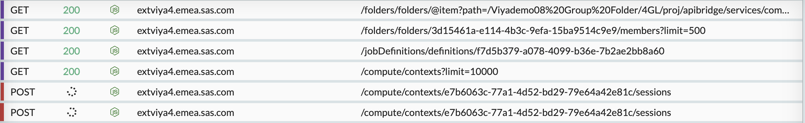
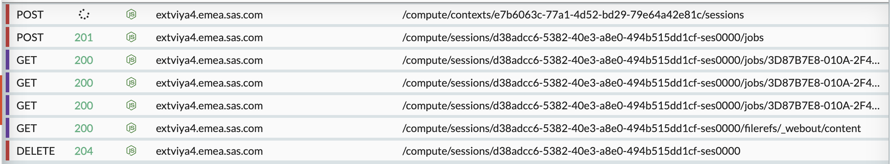

@sasjs/adapter
@sasjs/adapter


SASjs is a open-source framework for building Web Apps on SAS® platforms. You can use as much or as little of it as you like. This repository contains the JS adapter, the part that handles the to/from SAS communication on the client side. There are 3 ways to install it:
1 - npm install @sasjs/adapter - for use in a nodeJS project (recommended)
2 - Download and use a copy of the latest JS file
3 - Reference directly from the CDN - in which case click here and select "SRI" to get the script tag with the integrity hash.
If you are short on time and just need to build an app quickly, then check out this video and the react-seed-app which provides some boilerplate.
For more information on building web apps with SAS, check out sasjs.io
None of this makes sense. How do I build an app with it?
Ok ok. Deploy this example.html file to your web server, and update servertype to SAS9, SASVIYA, or SASJS depending on your backend.
The backend part can be deployed as follows:
%let appLoc=/Public/app/readme; /* Metadata or Viya Folder per SASjs config */
filename mc url "https://raw.githubusercontent.com/sasjs/core/main/all.sas";
%inc mc; /* compile macros (can also be downloaded & compiled seperately) */
filename ft15f001 temp;
parmcards4;
%webout(FETCH) /* receive all data as SAS datasets */
proc sql;
create table areas as select make,mean(invoice) as avprice
from sashelp.cars
where type in (select type from work.fromjs)
group by 1;
%webout(OPEN)
%webout(OBJ,areas)
%webout(CLOSE)
;;;;
%mx_createwebservice(path=&appLoc/common,name=getdata)
You now have a simple web app with a backend service!
Detailed Overview
The SASjs adapter is a JS library and a set of SAS Macros that handle the communication between the frontend app and backend SAS services.
There are three parts to consider:
- JS request / response
- SAS inputs / outputs
- Configuration
JS Request / Response
To install the library you can simply run npm i @sasjs/adapter or include a <script> tag with a reference to our CDN.
Full technical documentation is available here. The main parts are:
Instantiation
The following code will instantiate an instance of the adapter:
let sasJs = new SASjs.default({
appLoc: '/Your/SAS/Folder',
serverType: 'SAS9'
})
If you've installed it via NPM, you can import it as a default import like so:
import SASjs from '@sasjs/adapter'
You can then instantiate it with:
const sasJs = new SASjs({your config})
More on the config later.
SAS Logon
All authentication from the adapter is done against SASLogon. There are two approaches that can be taken, which are configured using the loginMechanism attribute of the sasJs config object (above):
loginMechanism:'Redirected'- this approach enables authentication through a SASLogon window, supporting complex authentication flows (such as 2FA) and avoids the need to handle passwords in the application itself. The styling of the window can be modified using CSS.loginMechanism:'Default'- this approach requires that the username and password are captured, and used within the.login()method. This can be helpful for development, or automated testing.
Sample code for logging in with the Default approach:
sasJs.logIn('USERNAME','PASSWORD'
).then((response) => {
if (response.isLoggedIn === true) {
console.log('do stuff')
} else {
console.log('do other stuff')
}
}
More examples of using authentication, and more, can be found in the SASjs Seed Apps on github.
SAS 9 credentials (deprecated)
Earlier versions logged into SAS 9 by passing a username and password, which were appended to the _program URL as _username and _password. This is deprecated.
It puts the credentials in a query string - where they are recorded by server logs, proxies, and anything else that logs request URLs - and SAS 9 only accepts them when the platform is configured to allow URL credentials, so it never worked without a server-side change. There is no drop-in replacement for the mechanism itself, and it will be removed in a future major version.
It surfaces in three places:
authConfigSas9onexecuteScript()- the
userNameandpasswordarguments ofSAS9ApiClient.executeScript() usernameandpasswordin the job-execution config forserverType: 'SAS9'
Using it logs a single deprecation warning per process.
Request / Response
A simple request can be sent to SAS in the following fashion:
sasJs.request('/path/to/my/service', dataObject).then((response) => {
// all tables are in the response object, eg:
console.log(response.tablewith2cols1row[0].COL1.value)
})
We supply the path to the SAS service, and a data object.
If the path starts with a / then it should be a full path to the service. If there is no leading / then it is relative to the appLoc.
The data object can be null (for services with no input), or can contain one or more "tables" in the following format:
let dataObject = {
tablewith2cols1row: [
{
col1: 'val1',
col2: 42
}
],
tablewith1col2rows: [
{
col: 'row1'
},
{
col: 'row2'
}
]
}
These tables (tablewith2cols1row and tablewith1col2rows) will be created in SAS WORK after running %webout(FETCH) in your SAS service.
The request() method also has optional parameters such as a config object and a callback login function.
The response object will contain returned tables and columns. Table names are always lowercase, and column names uppercase.
The adapter will also cache the logs (if debug enabled) and even the work tables. For performance, it is best to keep debug mode off.
Verbose Mode
Set verbose to true to enable verbose mode that logs a summary of every HTTP response. Verbose mode can be disabled by calling disableVerboseMode method or enabled by enableVerboseMode method. Verbose mode also supports bleached mode that disables extra colors in req/res summary. To enable bleached verbose mode, pass verbose equal to bleached while instantiating an instance of RequestClient or to setVerboseMode method. Verbose mode can also be enabled/disabled by startComputeJob method.
Session Manager
To execute a script on Viya a session has to be created first which is time-consuming (~15sec). That is why a Session Manager has been created which is implementing the following logic:
- When the first session is requested, we also create one more session (hot session) for future requests. Please notice two pending POST requests to create a session within the same context:

- When a subsequent request for a session is received and there is a hot session available (not expired), this session is returned and an asynchronous request to create another hot session is sent. Please notice that there is a pending POST request to create a new session while a job has been already finished execution (POST request with status 201):

- When a subsequent request for a session is received and there is no available hot session, 2 requests are sent asynchronously to create a session. The first created session will be returned and another session will be reserved for future requests.
Variable Types
The SAS type (char/numeric) of the values is determined according to a set of rules:
- If the values are numeric, the SAS type is numeric
- If the values are all string, the SAS type is character
- If the values contain a single character (a-Z + underscore + .) AND a numeric, then the SAS type is numeric (with special missing values).
nullis set to either '.' or '' depending on the assigned or derived type per the above rules. If entire column isnullthen the type will be numeric.
The following table illustrates the formats applied to columns under various scenarios:
| JS Values | SAS Format |
|---|---|
| 'a', 'a' | $char1. |
| 0, '_' | best. |
| 'Z', 0 | best. |
| 'a', 'aaa' | $char3. |
| null, 'a', 'aaa' | $char3. |
| null, 'a', 0 | best. |
| null, null | best. |
| null, '' | $char1. |
| null, 'a' | $char1. |
| 'a' | $char1. |
| 'a', null | $char1. |
| 'a', null, 0 | best. |
Validation is also performed on the values. The following combinations will throw errors:
| JS Values | SAS Format |
|---|---|
| null, 'aaaa', 0 | Error: mixed types. 'aaaa' is not a special missing value. |
| 0, 'a', '!' | Error: mixed types. '!' is not a special missing value |
| 1.1, '.', 0 | Error: mixed types. For regular nulls, use null |
Variable Format Override
The auto-detect functionality above is thwarted in the following scenarios:
- A character column containing only
nullvalues (is considered numeric) - A numeric column containing only special missing values (is considered character)
To cater for these scenarios, an optional array of formats can be passed along with the data to ensure that SAS will read them in correctly.
To understand these formats, it should be noted that the JSON data is NOT passed directly (as JSON) to SAS. It is first converted into CSV, and the header row is actually an infile statement in disguise. It looks a bit like this:
CHARVAR1:$char4. CHARVAR2:$char1. NUMVAR:best.
LOAD,,0
ABCD,X,.
To provide overrides to this header row, the tables object can be constructed as follows (with a leading '$' in the table name):
let specialData = {
tablewith2cols2rows: [
{ col1: 'val1', specialMissingsCol: 'A' },
{ col1: 'val2', specialMissingsCol: '_' }
],
$tablewith2cols2rows: { formats: { specialMissingsCol: 'best.' } }
}
It is not necessary to provide formats for ALL the columns, only the ones that need to be overridden.
SAS Inputs / Outputs
The SAS side is handled by a number of macros in the macro core library.
The following snippet shows the process of SAS tables arriving / leaving:
/* convert frontend input tables from into SASWORK datasets */
%webout(FETCH)
/* some sas code */
data a b c;
set from js;
run;
%webout(OPEN) /* Open the JSON to be returned */
%webout(OBJ,a) /* Rows in table `a` are objects (easy to use) */
%webout(ARR,b) /* Rows in table `b` are arrays (compact) */
%webout(OBJ,c,fmt=N) /* Table `c` is sent unformatted (raw) */
%webout(OBJ,c,dslabel=d) /* Rename table as `d` in output JSON */
%webout(OBJ,c,dslabel=e, maxobs=10) /* send only 10 rows back */
%webout(CLOSE) /* Close the JSON and add default variables */
By default, special SAS numeric missings (_a-Z) are converted to null in the JSON. If you'd like to preserve these, use the missing=STRING option as follows:
%webout(OBJ,a,missing=STRING)
In this case, special missings (such as .a, .b) are converted to javascript string values ('A', 'B').
Where an entire column is made up of special missing numerics, there would be no way to distinguish it from a single-character column by looking at the values. To cater for this scenario, it is possible to export the variable types (and other attributes such as label and format) by adding a showmeta param to the webout() macro as follows:
%webout(OBJ,a,missing=STRING,showmeta=YES)
The %webout() macro itself is just a wrapper for the mp_jsonout macro.
Configuration
Configuration on the client side involves passing an object on startup, which can also be passed with each request. Technical documentation on the SASjsConfig class is available here. The main config items are:
appLoc- this is the folder (eg in metadata or SAS Drive) under which the SAS services are created.serverType- eitherSAS9,SASVIYAorSASJS. TheSASJSserver type is for use with sasjs/server.serverUrl- the location (including http protocol and port) of the SAS Server. Can be omitted, eg if serving directly from the SAS Web Server, or in streaming mode.debug- iftruethen SAS Logs and extra debug information is returned.verbose- optional, iftruethen a summary of every HTTP response is logged.loginMechanism- eitherDefaultorRedirected. See SAS Logon section.useComputeApi- Only relevant when the serverType isSASVIYA. Iftruethe Compute API is used. Iffalsethe JES API is used. Ifnullorundefinedthe Web approach is used.runAsTask- Only relevant for serverTypeSASVIYAand useComputeApinull. Will add the_EXECUTIONTASKS=trueURL param and thus execute jobs as Compute Tasks.contextName- Compute context on which the requests will be called. If missing or not provided, defaults toJob Execution Compute context.requestHistoryLimit- Request history limit. Increasing this limit may affect browser performance, especially with debug (logs) enabled. Default is 10.
The adapter supports a number of approaches for interfacing with Viya (serverType is SASVIYA). For maximum performance, be sure to configure your compute context with reuseServerProcesses as true and a system account in runServerAs. This functionality is available since Viya 3.5. This configuration is supported when creating contexts using the CLI.
Using JES Web App
In this setup, all requests are routed through the JES web app, at YOURSERVER/SASJobExecution?_program=/your/program. This is the most reliable method, and also the slowest. One request is made to the JES app, and remaining requests (getting job uri, session spawning, passing parameters, running the program, fetching the log) are handled by the SAS server inside the JES app.
{
appLoc:"/Your/Path",
serverType:"SASVIYA",
contextName: 'yourComputeContext'
}
Note - to use the web approach, the useComputeApi property must be undefined or null.
Using the JES API
Here we are running Jobs using the Job Execution Service except this time we are making the requests directly using the REST API instead of through the JES Web App. This is helpful when we need to call web services outside of a browser (eg with the SASjs CLI or other commandline tools). To save one network request, the adapter prefetches the JOB URIs and passes them in the __job parameter. Depending on your network bandwidth, it may or may not be faster than the JES Web approach.
This approach (useComputeApi: false) also ensures that jobs are displayed in Environment Manager.
{
"appLoc": "/Your/Path",
"serverType": "SASVIYA",
"useComputeApi": false,
"contextName": "yourComputeContext"
}
Using the Compute API
This approach is by far the fastest, as a result of the optimisations we have built into the adapter. With this configuration, in the first sasjs request, we take a URI map of the services in the target folder, and create a session manager. This manager will spawn a additional session every time a request is made. Subsequent requests will use the existing 'hot' session, if it exists. Sessions are always deleted after every use, which actually makes this less resource intensive than a typical JES web app, in which all sessions are kept alive by default for 15 minutes.
With this approach (useComputeApi: true), the requests/logs will not appear in the list in Environment manager.
{
"appLoc": "/Your/Path",
"serverType": "SASVIYA",
"useComputeApi": true,
"contextName": "yourComputeContext"
}
More resources
For more information and examples specific to this adapter you can check out the user guide or the technical documentation.
For more information on building web apps in general, check out these resources or contact the author directly.
As a SAS customer you can also request a copy of Data Controller - free for up to 5 users, this tool makes use of all parts of the SASjs framework.
Star Gazing
If you find this library useful, help us grow our star graph!

Contributors ✨

Thanks goes to these wonderful people (emoji key):
 Krishna Acondy 💻 🚇 📝 🖋 🤔 📹 |
 Yury Shkoda 💻 🚇 🤔 ⚠️ 📹 |
 Mihajlo Medjedovic 💻 🚇 ⚠️ 👀 |
 Allan Bowe 💻 👀 ⚠️ 🧑🏫 🚧 |
 Muhammad Saad 💻 👀 ⚠️ 🧑🏫 🚇 |
 Sabir Hassan 💻 👀 ⚠️ 🤔 |
 VladislavParhomchik ⚠️ 👀 |
 Rud Faden 📓 📖 |
 Sara 📓 📦 |
This project follows the all-contributors specification. Contributions of any kind welcome!